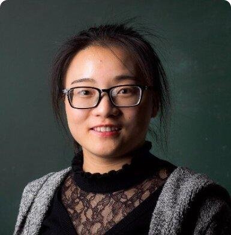
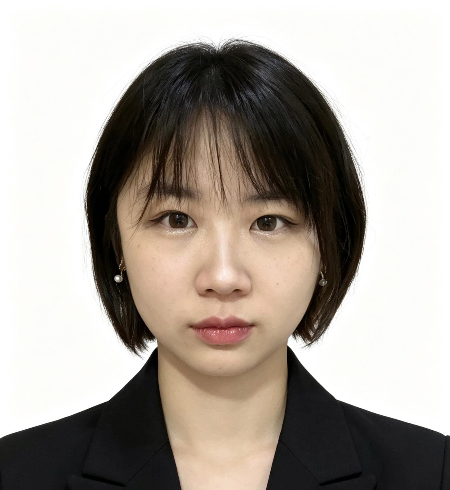
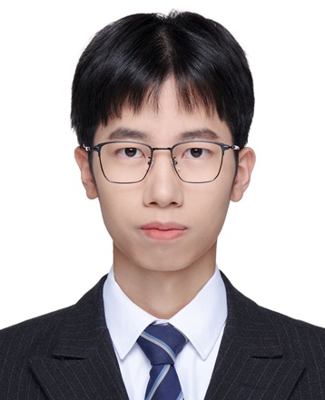
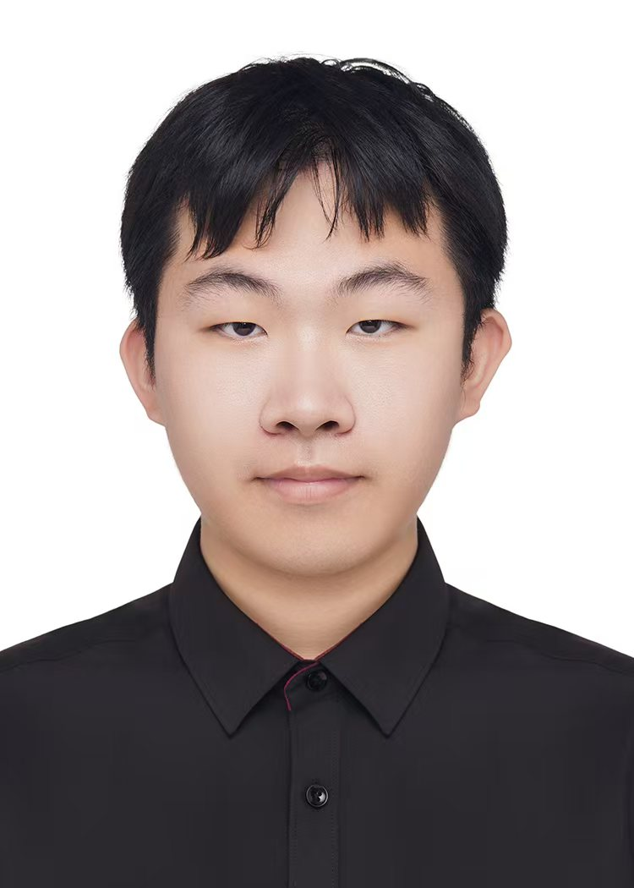
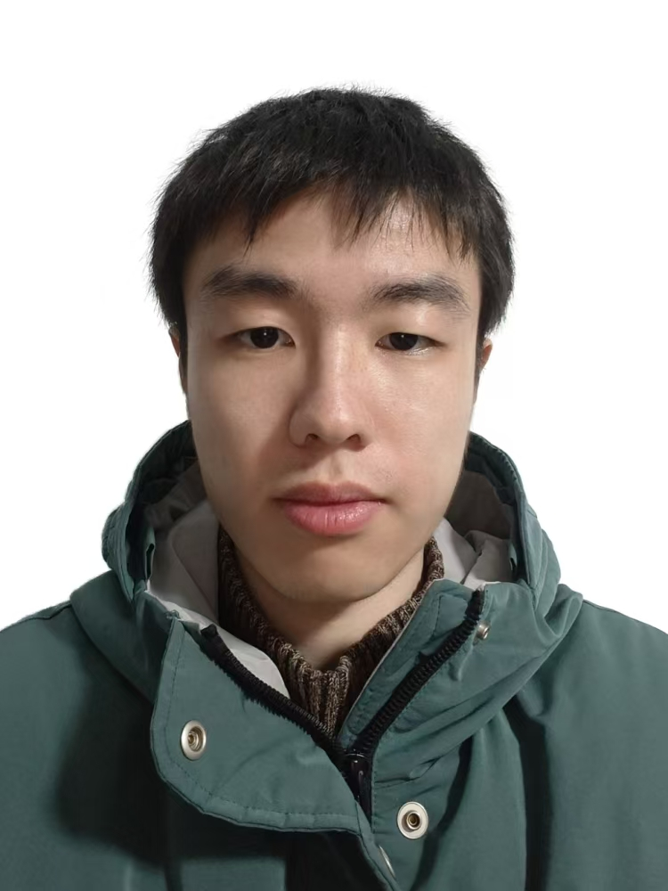
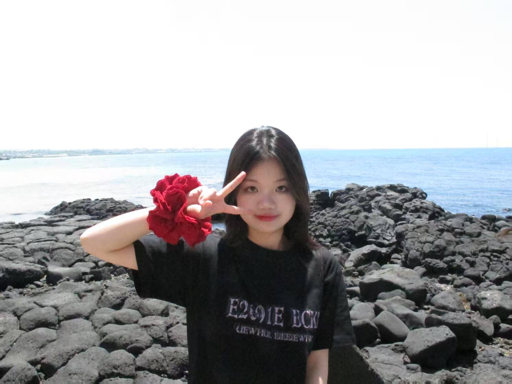

首页
研究方向
团队风采
研究成果
新闻动态
加入我们
团队风采

高小钦 教授
博士生导师
研究方向：量子光学、量子纠缠、量子成像、量子计算、尤其在高维量子系统，理论和实验研究
博士生导师。
国家海外高层次人才引进青年。
迄今以第一或通讯作者身份发表Phys.Rev.Lett.等SCI学术论文17余篇。
2017年-2020年在奥地利科学院诺贝尔物理学奖得主Anton Zeilinger课题组，高维量子信息研究。
2020年-2024年在加拿大渥太华大学&加拿大国家研究委员会，高维量子光学理论与实验研究。

朱珠
课题组秘书
负责实验室日常管理、财务、项目申报等
热情高效，为课题组提供全方位的行政支持，确保研究顺利进行。

唐昊 博士
博士后
研究方向：量子纠缠与非局域性，高维量子系统及其信息处理任务
2026年加入课题组，主要从事量子信息与量子光学方向研究，并对新技术与交叉学科问题保持浓厚兴趣。科研之外，他也喜欢阅读、音乐、电影，爬山等等。

庄捷敏
博士研究生 (2026级)
研究方向：基于高维光子态的量子精密测量
对量子信息以及量子精密测量感兴趣，重点关注光子的高维资源。
区靖愉
博士研究生 (2026级)
研究方向：光量子计算，量子纠错的理论与仿真
希望从事量子计算的理论与实验工作，喜爱攀岩、跑步、爬山。

应天佑
硕士研究生 (2024级)
研究方向：量子搜索算法及量子逻辑电路搭建、高维光子量子态演化理论计算
2024级硕士生，主攻理论计算方向，主要工作是设计实验方案并作理论结果计算与分析，对编程感兴趣，爱好看SF和二次元。

周玉凤
硕士研究生 (2025级)
研究方向：量子拓扑结构中的拓扑纠缠，主要关注拓扑物态中纠缠结构的刻画与演化
研究兴趣包括量子拓扑结构与拓扑纠缠，探索拓扑体系中的非平凡纠缠性质。课余喜爱羽毛球和摄影，乐于在科研与生活之间寻找平衡与灵感。
毕业生去向
潘丞蔚
—— 去向：中国科学院大学
袁强
—— 去向：企业